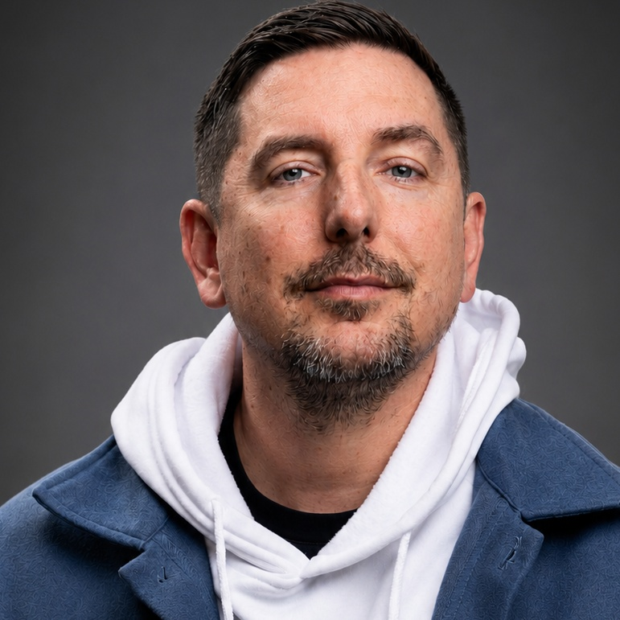

Enterprise account ownership
I manage every enterprise client at Dineline, including the company’s top clients and multi-location groups. I build the book of business and own the account strategy and client relationships.
I manage every enterprise client at Dineline and build the book of business. I manage the company’s top clients, consistently hold its largest monthly recurring revenue (MRR) portfolio, and maintain its highest client retention. My work combines hands-on account ownership, team leadership, and practical AI workflows.
I work with restaurant operators and multi-location groups to connect their goals with the work happening across account management, media, creative, product, and operations. That can mean reviewing performance, working through an escalation, improving an onboarding process, or helping a team decide where to focus.
My background started in design and agency leadership. Today, I bring that same attention to execution into customer strategy: understand the problem, make the plan clear, and help the team follow through.
I manage every enterprise client at Dineline, including the company’s top clients and multi-location groups. I build the book of business and own the account strategy and client relationships.
I manage Account Managers and work with the current team on client escalations. At Blue Light Media, I managed a team of seven working with major e-commerce brands.
I use customer and performance data to understand what needs attention, guide strategy, and support long-term partnerships. I maintain 97% average retention over four years and add multiple locations to my book of business through upsells every month.
I use AI in strategy and workflow development, alongside playbooks and educational content. My AI creative and reporting work includes internal concepts and early frameworks.
My background combines customer retention, enterprise account strategy, and people leadership. I stay close to customers and help teams turn the plan into useful work.
Collaborate on Dishio’s onboarding, future planning, and product development strategy, while building automations aimed at company growth and client success.
Developed playbooks, case studies, and YouTube strategy to make restaurant-growth ideas easier to understand and apply.
Manage every enterprise client at Dineline and build the book of business, including the company’s top clients and multi-location operations.
Understand the account, give the team a plan, and make progress visible. Use AI where it can make reporting, preparation, or repetitive work more useful, while keeping people responsible for the decisions.
Understand each group’s goals, stakeholders, and operating realities. Identify where adoption or performance is putting the relationship at risk.
Coach account strategy, create useful playbooks, and help the team navigate executive relationships and customer challenges.
Use customer metrics to guide retention and growth plans. Apply AI where it can reduce repetitive work and leave more time for the relationship.
These examples show the range of my work across customer strategy, onboarding, enablement, and AI-assisted development.
I work across the enterprise client portfolio at Dineline, managing those accounts while helping account managers. I maintain an average of 80,000 in monthly recurring revenue (MRR), with 97% average retention over four years. I add multiple locations to my book of business through upsells every month.
My contribution: Direct enterprise account management, book-of-business growth, account strategy, escalation support, and cross-functional coordination.
97% average retention over four years; ongoing expansion through monthly location upsells.
I collaborate on onboarding, future planning, and product development strategy at Dishio. I build automations across these workflows with the aim of supporting company growth and client success.
My contribution: Onboarding development, product planning, workflow automation, testing, and feedback.
Collaborative strategy and development work focused on business growth and better client outcomes.
I built an initial framework for AI-assisted ads reporting and optimization and use AI-assisted development to prototype websites, reporting concepts, and workflows. I also explored an internal concept for AI-generated restaurant advertising creative.
My contribution: Workflow design, prototyping, and early testing.
Initial frameworks and concepts, not a production software launch.
I develop playbooks, case studies, and YouTube strategy to make restaurant-growth ideas easier to understand and apply.
My contribution: Strategy, educational content, and repeatable frameworks.
Explore two strategy videos below.
A closer look at my work with restaurant clients and the results reported during those periods. Restaurant performance reflects multiple factors; these figures do not isolate the impact of a single campaign.
+47.5% year-over-year sales
January–September 2026
As the account manager, I worked on a strategy combining happy-hour positioning, custom landing pages, client-shot and AI-assisted creative, guest winback, and Google campaigns.
Result reported in the account’s performance reporting for January–September 2026, compared with the same period in 2025.
+34.9% year-over-year net sales
June 2026
I coordinated a multi-location World Cup campaign with dedicated advertising and a campaign landing page, giving the team a shared plan around a major guest occasion.
Result reported for June 2026, compared with June 2025. The campaign was one part of the business’s activity during that period.
+16.3% revenue in April · +22.5% in May
Year over year, 2026
I repositioned the campaign around the happy-hour experience, supported by advertising and a custom landing page.
Revenue changes reported for April and May 2026 against the corresponding months in 2025.
3,000 → 26,000 subscribers
I grew the company’s YouTube channel with content and strategy aimed at restaurant owners, turning growth ideas and campaign learnings into practical educational content.
Channel growth from my work on YouTube strategy. Restaurant owners are the target audience; subscriber occupations are not independently verified.
Restaurant-owner references are available on request.

I started in design, then co-founded Blue Light Media, managed a team of seven working with major e-commerce brands, and helped lead the business through acquisition. At Dineline / Dishio, I manage the full enterprise client portfolio, build the book of business, and lead account strategy alongside team leadership and practical ways to help restaurant businesses grow.
I like leading the team and staying close to the customer. The best strategy has to work for both.
I'm interested in customer success and strategy roles where I can help teams deliver better customer experiences, build lasting relationships, and use AI in practical ways.